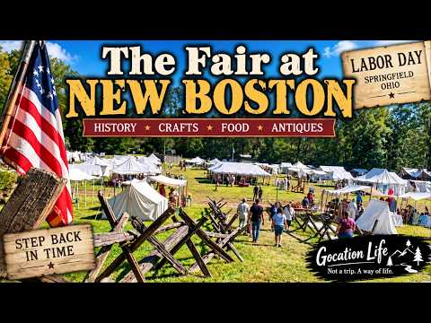

A Gocation Life destination
Fair at
New Boston
Springfield, Ohio
A slow walk through living history, artisan tents, and early Ohio traditions.

The place & its story
A little history
The Fair at New Boston is a living-history event at George Rogers Clark Park in Springfield. A local tradition since 1982, it brings early Ohio life into view through period crafts, encampments, food, music, and demonstrations.
The George Rogers Clark Heritage Association grew out of the 1980 Battle of Peckuwe reenactment and later turned its attention toward civilian life in the Federal period. The Fair uses a historic trade-fair setting to share that story.
The association's participant handbook makes an important distinction: a fair was never held at the original New Boston. Today's event is an educational recreation of period fair life.
History sources: George Rogers Clark Heritage Association · Official participant handbook
Gocation Life
Our Visit
Our 2026 visit is a 38-minute walkthrough of the Fair's grounds, following the tents, encampments, artisan booths, and shaded paths at an unhurried pace.
The video shares reenactors, historic demonstrations, handmade goods, music, and food as part of the living-history setting. Come along for the sights and sounds of the Fair, with time to take in the atmosphere along the way.
Visit coverage follows our video's published description. Uploaded September 8, 2026; the upload date is not a claim about which day we attended.
Come along with us
Watch our Fair at New Boston visit
38 minutes, 24 seconds · Verified as a Gocation Life upload.
A reason to come back
Ideas for a return visit
Make time for the makers
On a future Fair day, linger at the artisan demonstrations and handmade-goods booths. Check the new program for the crafts and demonstrations offered that year.
Plan around a performance
Choose music, period dancing, a historical speaker, or a military demonstration from the next published schedule, then leave time to wander between stops.
Suggestions for next time, based on the organizer's Fair guide and 2026 entertainment program. Future offerings and times may change.
Travel meets vintage
ATWW ideas nearby
Heart of Ohio Antique Center
4785 E. National Road
Springfield, OH 45505
A Springfield-area idea for an Along the Whimsy Way outing, with antiques and collectibles across a large collection of dealer booths and showcases. Allow a separate stretch of your day for browsing and check current hours before driving over.
Official shop information & hours ↗Location and antique interest verified through the shop's official website. This is a future outing idea; a visit or purchase here is not documented in our Fair coverage.
Explore Along the Whimsy Way ↗Before you go
Plan a visit
Find the Fair
George Rogers Clark Park
S. Tecumseh Road
Springfield, OH 45506
The organizer lists 926 S. Tecumseh Road on its Fair page and 936 on its contact page. Confirm the event entrance with GRCHA at 937-882-9216 before setting out. Official contact details ↗
Check the next Fair
The organizer's latest posted Fair was September 5–6, 2026, over Labor Day weekend. Those dates have passed. Check for the next confirmed dates, admission prices, daily hours, and program before planning a return.
Official visitor information ↗Outdoor terrain & access
The Fair is held outdoors, rain or shine. The organizer warns of several steep hills; shaded areas do not remove the need to prepare for the weather. Contact GRCHA about access needs, parking, and arrival arrangements.
Before bringing a pet
The organizer prohibits pets at the Fair and provides service-dog information on its visitor page. Review the current event policies and contact the organizer with specific questions.
Current event policies ↗Visitor details, video identity, and linked sources checked October 27, 2026. The 2026 program is historical context, not a confirmed schedule for the next Fair.